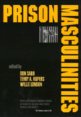

Activists, academics, and prisoners shed light on male hierarchy in prison and in society
Activists, academics, and prisoners shed light on male hierarchy in prison and in society


 Activists, academics, and prisoners shed light on male hierarchy in prison and in society
Activists, academics, and prisoners shed light on male hierarchy in prison and in society

|  |
Prison Masculinitiesedited by Don Sabo, Terry A. Kupers and Willie Londonpaper EAN: 978-1-56639-816-9 (ISBN: 1-56639-816-9) |
"A remarkable book, which confirms our worst fears about the ongoing failure of the U.S. prison system. And yet if offers real hope, real ideas for change. Every legislator in America should be locked in Solitary and forced to read Prison Masculinities."
—Tom Fontana, creator of Oz
This book explores the frightening ways our prisons mirror the worst aspects of society-wide gender relations. It is part of the growing research on men and masculinities. The collection is unusual in that it combines contributions from activists, academics, and prisoners.
The opening section, which features an essay by Angela Davis, focuses on the historical roots of the prison system, cultural practices surrounding gender and punishment, and the current expansion of corrections into the "prison-industrial complex."
The next section examines the dominant or subservient roles that men play in prison and the connections between this hierarchy and male violence. Another section looks at the spectrum of intimate relationships behind bars, from rape to friendship, and another at physical and mental health.
The last section is about efforts to reform prisons and prison masculinities, including support groups for men. It features an essay about prospects for post-release success in the community written by a man who, after doing time in Soledad and San Quentin, went on to get a doctorate in counseling.
The contributions from prisoners include an essay on enforced celibacy by Mumia Abu-Jamal, as well as fiction and poetry on prison health policy, violence, and intimacy. The creative contributions were selected from the more than 200 submissions received from prisoners.
Excerpt available at www.temple.edu/tempress
"The enforced sequestration of men and women results in hard time, and invites adaptive responses that can often be unseemly, ugly, and destructive. This book shows how male prisons have becme stages for the display and posturing of caricatured masculinity, including the victimization of vulnerable fellow-prisoners. The contribution is impotant, timely, and challenging."
—Hans Toch, Distinguished Professor, School of Criminal Justice, University at Albany, SUNY, and author of Mosaic of Despair and Corrections: A Humanistic Approach
"...an intricate puzzle piece to anyone wishing to comprehend the byproducts of American culture and the criminal justice system."
—BLU
"This sobering collection of essays, scientific findings, poems and heart-breaking testimonials paints a picture of a prison system held hostage by troubled masculinity."
—Empire: Gay Man's Guide to Life
"Prison Masculinities provides an insightful look at the way that masculinity circulates in prisons and on the street. ...a long overdue examination of the hypermasculinity adopted within prisons in response to the fact that prisons are intended, among other things, to emasculate inmates. ... This book is a call to arms to not only re-examine the oppressive structures of prison, but to look at prisons as a microcosm of a society that has perverted the definition of manhood, so that it has come to oppress not only women, but men as well."
—Fortune News
Read a review essay from Criminal Law Forum, Volume 12 (2001), written by Ian O'Donnell (pdf).
Acknowledgments
Part I: Introduction
Gender and the Politics of Punishment – Don Sabo, Terry A. Kupers, and Willie London
Part II: Historical Roots and Contemporary Trends
Penitence for the Privileged: Manhood, Race, and Penitentiaries in Early America – Mark E. Kann
Race, Gender, and Prison History: From the Convict Lease System to the Supermax Prison – Angela Y. Davis
Crime, Politics, and Community since the 1990s – Marc Mauer
The Elements of Crime – Anthony Thomas
A World Without Softness – Willie London
Slave Ship – Steve Fraley
Part III: The Social Construction of Prison Masculinities
Doing Time, Doing Masculinity: Sports and Prisons – Don Saho
Masculinities, Crime and Prison – James W. Messerschmidt
Grappling with Issues of Privilege: A Male Prison Worker’s Perspective – David Denborough
The Culture of Transgression: Initiations into the Homosociality of a Midwestern State Prison – Carl Bryan Holmberg
Male Prisoners: Privacy, Suffering, and the Legal Construction of Masculinity – Nancy Levit
Boyz II Men – Horace Bell
Devil’s Den – Horace Bell
My Mother Death – Willie London
Prison Friendships – Derrick Corley
Part IV: Sexualities, Sexual Violence, and Intimacy in Prison
Rape and the Prison Code – Terry A. Kupers
A Million Jockers, Punks, and Queens – Stephen “Donny” Donaldson
The Story of a Black Punk – Anonymous
The Wall of Silence: Prison Rape and Feminist Politics – Susanne V. Paczensky
A Moment – O’Neil Stough
Caged and Celibate – Mumia Abu-Jamal
The Phone – Michael Keck
Be Not So Quick to Judge – Alice
Reflections – Carlos Hornsby
Skin Blind – Dan Pens
Once More I Dream – Stephen Wayne Anderson
Part V: Men’s Health in Prison
Preventive Health Strategies for Men in Prison – Will H. Courtenay and Don Sabo
Sentence—Death by Lethal Infection: IV-Drug Use and Infectious Disease Transmission in North American Prisons – Carol Polych and Don Sabo
Deliberate Indifference – O’Neil Stough
Mental Health in Men’s Prisons – Terry A. Kupers
Night Crier – Rudy Chato Paul Sr.
Part VI: Prison Reform, Reforming Prison Masculinities
Scars – Jarvis Masters
Boys are Not Men: Notes on Working with Adolescent Males in Juvenile Detention – Jackson Katz
Support Groups for Men in Prison: The Fellowship of the King of Hearts – Harris Breiman and T. Pete Bonner
The Anti-Exploits of Men Against Sexism, 1977-78 – Daniel Burton-Rose
Men Helping Men: Facilitating Therapy Groups for Sex Offenders – Charles J. Sabatino
Litigation, Advocacy, and Self-Respect – Donald Specter and Terry A. Kupers
Rehabilitating Prison Labor: The Uses of Imprisoned Masculinity – Christian Parenti
Reentry: Prospects for Postrelease Success – Lige Dailey Jr.
For Further Reading
About the Contributors
Index
Don Sabo, Professor of Social Sciences at D'Youville College in Buffalo, is author or editor of five books, most recently, with David Gordon, Men's Health and Illness: Gender, Power, and the Body and, with Michael Messner, Sex, Violence, and Power in Sports: Rethinking Masculinity. Sabo has appeared on The Today Show, Oprah, and Donahue.
Terry A. Kupers, M.D., a psychiatrist, teaches at the Wright Institute in Berkeley. He is the author of four books, editor of a fifth. His latest books are Prison Madness: The Mental Health Crisis Behind Bars and What We Must Do About It and Revisioning Men's Lives: Gender, Intimacy, and Power. Kupers has served as an expert witness in more than a dozen cases on conditions of confinement and mental health services.
Willie London, a published poet, is General Editor of the prison publication Elite Expressions. He is currently an inmate at Eastern Corrections. For nine years he was a prisoner at Attica.
Law and Criminology
Gender Studies
© 2015 Temple University. All Rights Reserved. This page: http://www.temple.edu/tempress/titles/1478_reg.html.